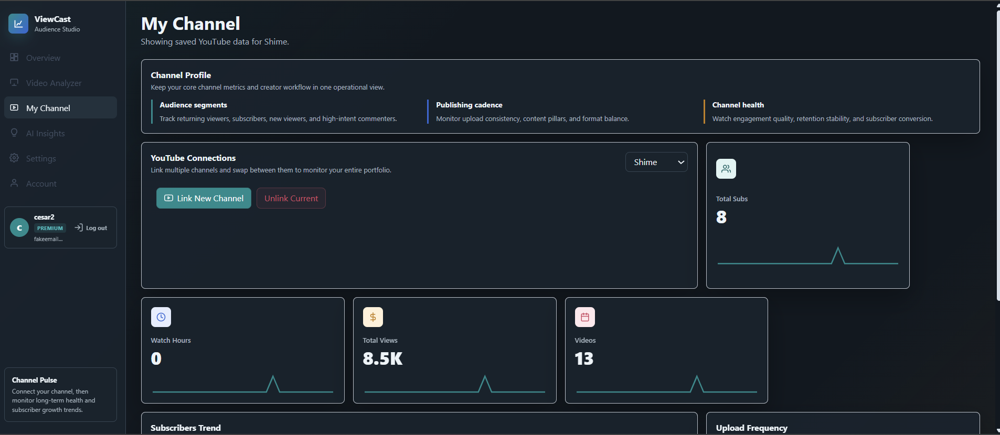

Overview dashboard
Placeholder totals show 128,400 views, 9,820 watch hours, and 2,140 new subscribers across the last 28 days.

Showcase for the ViewCast web app
A creator analytics dashboard for people who link their YouTube channel and want AI to explain what is working, what is slowing growth, and what to publish next.
Product
The site now uses your app screenshots and sample data to present ViewCast as a real creator workspace, from channel linking to video-level analysis.
Placeholder totals show 128,400 views, 9,820 watch hours, and 2,140 new subscribers across the last 28 days.
A creator can paste a YouTube URL or refresh linked uploads, then ViewCast can show retention, pacing, search terms, and AI improvement ideas.
The connection screen explains the channel profile, subscriber trend, upload cadence, and the YouTube account used for AI insights.
Screens
These screenshots show the real layout and navigation of the ViewCast app, with placeholder data used to demonstrate what a connected creator account will see.
The overview introduces the command center, 28-day health, traffic sources, and video opportunity placeholders before a channel is fully populated.
Workflow
Demo
Use this form as a placeholder lead capture for creators who want to link YouTube and preview AI-powered channel recommendations.